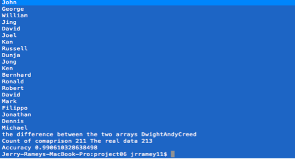

Data Mining Portfolio
Application: The Badges Problem
What’s in a name?
The implications of data mining can be applied to many necessary needs for a user. Data mining is an essential tool in learning data and producing useful information about that data. As humans, we can think of ourselves as autonomic data mining machines due to the fact our brains are so inclined to detect patterns and categorise things. When given the list of names of losers and winners, we naturally begin to pick apart each name in order to find a specific pattern that would help to determine the deciding factor between a loser and a winner. This follow up, will discuss the process in which I used both my natural data mining and computational data mining skills to decipher the attribute that makes a name a winner or loser.
The first and probably the most essential step in the process, was to take the file of names and divide the list into two separate parts: the winners and the losers. This would make it easier to visually look for patterns as well as applying attribute measures to each data set. From here, I took a smaller sample of 20 names from each data set. This smaller sample acted as my subset data for looking at the entire data would be difficult due to the amount of data. With the subset data, I approached the data with a negative aspect in my decisions.
My negative outlook was able to help me determine what was not a possible attribute that would determine a winner. This was essential in narrowing the field to what the actual deciding attribute would be. The first attribute to easily rule out was the sex of the name. Simply by looking at the training data, I saw that males and females were mixed among both the winners and the losers. This provided the fact that the attributes had to be based on the arrangement of the letters and punctuation within each name. Once again with the negative approach, I looked at the hyphens and periods and noticed that they were mixed among the winners and losers. This narrowed down the field of the attribute to one possible category: arrangement of letters.
With this final possibility, I switched my view to a positive one and began to look for what was a possible attribute. My first initial instinct was to develop a program that would count the number of vowels in each name to see if a pattern was based on a specific number of vowels or a range of vowels. However, once running the program on both the winners and losers data the count of vowels varied among each. Spawned from the counting of vowels, I then decided to take a look at the count of consonants. This resulted in a mix of values among both winners and losers also. The elimination of vowel and consonant count patterns did not leave me in the dark. At that point, I was confident that I could assume that the number or letters in the last name, first name, or the entire name would be very unlikely and probably insignificant in determining what the actual deciding attribute was. This gave me my final way of looking at the data. Sex, punctuation, and counts did not draw any prominent patterns, leaving the attribute to be within the pattern of vowels and consonances. Pattern searching for this type of attribute would have been exhaustive even looking at just the subset of data due to the fact that a pattern would be extremely hard to detect. This led me to the idea to break apart each name and compare it letter by letter between the winners and losers. With the first iteration of this process nothing appeared to have a pattern as most of the names started with consonances that varied in both categories. In the second iteration though, a prominent pattern appeared between the winners and losers. The winners, for the most part, had all vowels for the second letter of their names and the losers had mostly consonances for their second letter.
After finding this pattern that seemed to be the dividing factor among the losers and winners, I had to run a few test in order to determine if this was a high fit attribute for the data. In order to do this, I reran the entire name list with the deciding attribute as being the second letter of the first name being a vowel or consonance. These names were extracted from the name list and placed into an array in order to compare to the array of winners. Thanks to Ruby, these comparisons were carried out with very little programming (results in terminal image). First, I compared the length of each array and received the results 211 for the attribute array and 213 for the original winners array, which gave a 99.06% accuracy. However, the amount in each array is not efficient enough to determine the accuracy of the attribute list due to the fact it could hold names that are not winners. This was solved by subtracting the two arrays, which returned the names Dwight, Andy, and Creed. This small discrepancy between the two arrays proves that the dividing attribute was correct with the consideration of noise. All together, data mining is something in which a human and a computer must team up in order to discover shared attributes among large sets of data or even to determine if you are a winner or a loser.